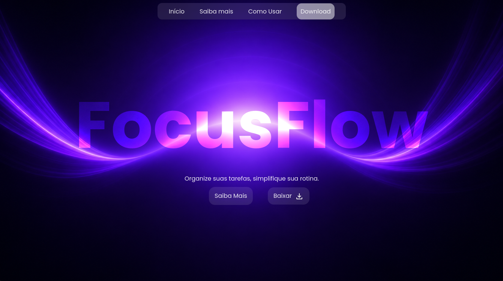
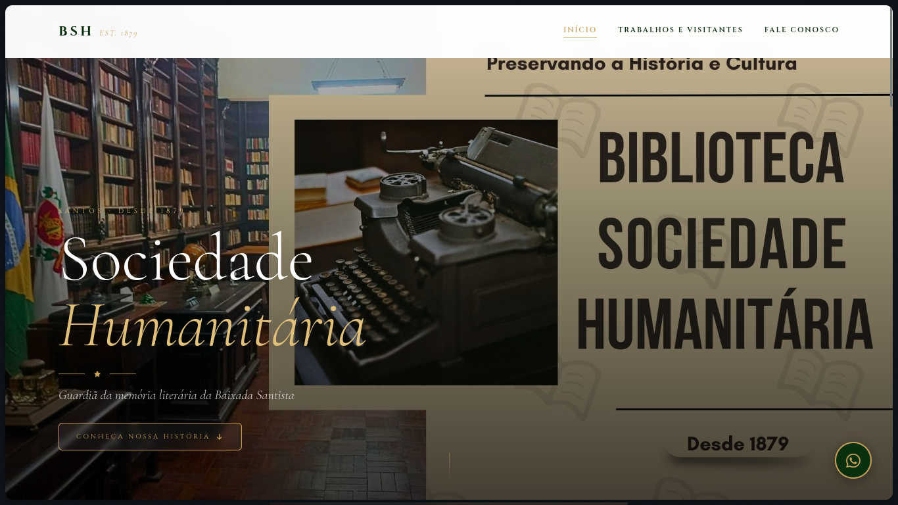

Prazer sou
Nicollas Cesar
Desenvolvedor full-stack focado em transformar ideias em interfaces web modernas e feitas totalmente do zero. Muito além de códigos e estruturas de arquivos, construo experiências digitais autênticas e imersivas.
Prazer sou
Desenvolvedor full-stack focado em transformar ideias em interfaces web modernas e feitas totalmente do zero. Muito além de códigos e estruturas de arquivos, construo experiências digitais autênticas e imersivas.

Olá! Sou Nicollas, um desenvolvedor full-stack movido pela paixão de transformar conceitos digitais
complexos em realidades web modernas e impactantes.
Minha jornada é guiada por uma abordagem de design minimalista e código estruturado, focada na criação
de
experiências digitais altamente funcionais, limpas e autênticas, construídas inteiramente do zero.
Com um olhar atento para a experiência do usuário e a performance, não me limito apenas a escrever
linhas de
código; vejo além da estrutura de arquivos para arquitetar soluções digitais que contam uma história e
entregam valor real. Estou sempre em busca de desafios que elevem meu nível técnico e criem conexões
genuínas na web.
Criação de interfaces responsivas, limpas e focadas em experiência de usuário (UX/UI).
Construção de APIs, lógica de servidores e integração de sistemas do zero.
Foco em código estruturado, boas práticas e otimização de aplicações web.



Landing page moderno e minimalista para um aplicativo de foco e organização de agenda.

Site institucional multipágina feito para a Sociedade Humanitária de Santos.